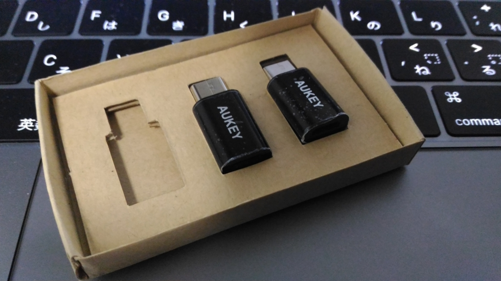
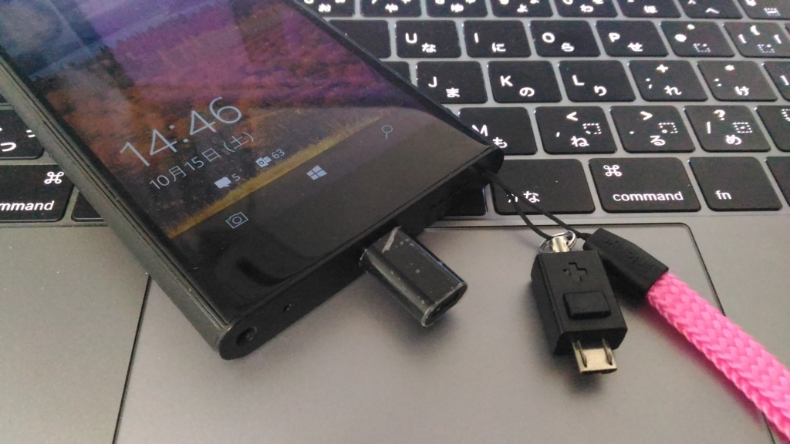

USB type C ケーブルを持ち運ぶのがめんどいので一計を案じた
公開日：

以前、密林のタイムセールで Micro USB → USB type C アダプターが安売りされていたので買った。これで NuAns NEO のためだけに USB type C ケーブルを持ち運ばなくて済む。
 56Kレジスタ使用 Quick Charge3.0対応 新しいMacBook、ChromeBook Pixel、Nexus 5X、OnePlus 2、Galaxy Note 7 他対応 CB-A2")
けれど、このアダプター、めっちゃ小さい。絶対なくす自信がある。まぁ、そんなに高いものではないので1個や2個なくしても死にはしないのだが、いざ使おうと思うときに失くしたのでは買った意味がない。
そこで一計を案じた。
 TR-MUC-BK")
Simplism Micro-USBポート用カラビナ(ブラック) TR-MUC-BK
- 出版社/メーカー: Simplism
- 発売日: 2013/01/31
- メディア: Wireless Phone Accessory
- 購入: 1人 クリック: 2回
- この商品を含むブログを見る
これはもともと Micro USB 対応端末に繋いでブラ下げることのできるカラビナ。スマホやポータブルオーディオを下げておくといった用途をターゲットにしたものだけど、正直、そんな高いものをこれでぶら下げようとはなかなか思わないよな。Micro USB の口が壊れたりしたらえらいことだし。でも、Micro USB → USB type C アダプター程度だったらいいかも。

カラビナを外して、ストラップに括り付けてみた。アダプターを使わないときは、ココに差しておくと失くさなくて済むと思う。カラビナは他の用途に再利用するつもり。

【お買い得10本パック】Entaniya シンプル ストラップ ショート カラフルセットＡ
- 出版社/メーカー: Entaniya
- メディア: エレクトロニクス
- この商品を含むブログを見る
ストラップは汎用・小型のお得品をテキトーにチョイス。10本セットなので9本余ったが、こういうのはちょっとした小物につけておいても便利なものなので無駄にならない……と思う。